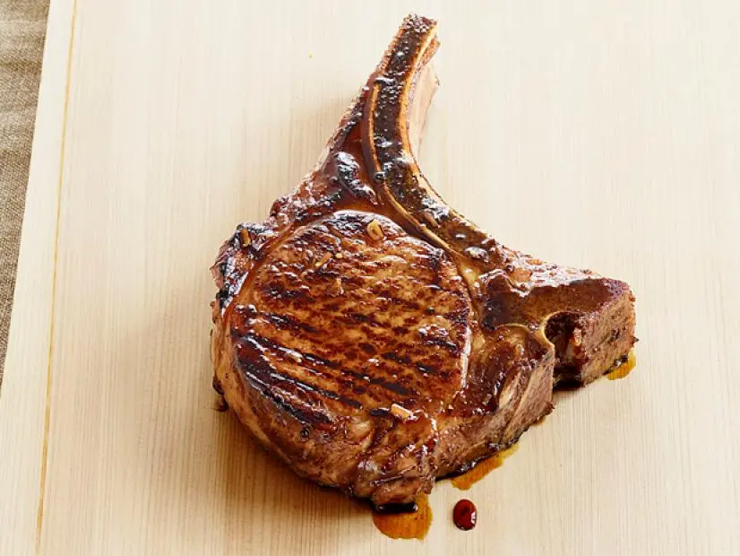

Coffee Molasses Brined Pork Chops
- "Defrost pork chops if necessary (approximately 2 hours under cold water)"
- "Prepare Coffe Brine:
- Using your choice of coffee (dark roast works best), prepare approximately 1 1/2 cups of coffee. Let it cool while you prepare the rest
- In a bowl combine:
- 6 oz molasses (by weight)
- 2 tbsp apple cider vinegar
- 1 tbsp dijon mustard
- 2 cloves garlic minced (or more if you're a garlic lover!)
- Salt and pepper to taste
- Add coffee and stir
- Place your pork chops in the brine ensuring they are adequately submerged and place them in the fridge for ~4 hours
- Preheat a pan on medium high heat and gently boil the brine until it develops into a nice glaze
- Grill pork chops over a hot coal grill for 4 minutes on each side or until internal temperature reaches 145F, rest for 5 minutes
- Glaze your chops and enjoy!
Serve with slaw, candied carrots, garlic mashed potatoes, or anything else your heart desires!
